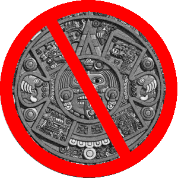

2013 Is the First Non-"Turn of the Millenium" Year
by phil on Monday Jan 28, 2013 9:14 PM

2013 is the first year of the 2000s that feels like a departure from a turn-of-the-millenium mindset. It even feels like the first real year of the decade.
Part of this has to do with the fact that nobody could ever settle on an appropriate way to call the first decade of 2000 (are they the "aughts"?). Another reason is because of 9/11, which made it so that the late aughts could never escape the echoes of 9/11 (thanks to the wars of Afghanistan and Iraq.) And just as Obama got elected, which was supposed to be a palate cleanser, the Great Recession happened, which anchored the next 4 years to the aughts as well.
But 2013, unlike 2012, feels like a break-away from the early 2000 years. It's the first real year of the new tens. Any talk of apocalypse seems ridiculous now. When 2012 came and went without a Mayan apocalypse, it hammered the final nail in the coffin for millennial Armageddon scenarios. Even predictions about an impending Singularity, which reached a zenith of attention in 1999, no longer seem "ten years away," but rather something that maybe will happen in 2065 or 2089. (Or will it even happen?)